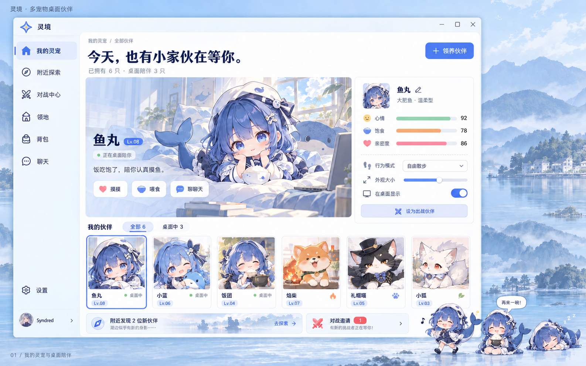

灵境之光
圆润四芒星 × 中央灵境入口。对称、轻盈，连接桌面陪伴与地图探索。
菜园与喂养闭环
探索 / 对战获得种子 → 播种 → 成熟收获 → 入背包 → 制作食物 → 喂给指定伙伴 → 继续养成与探索
基础菜园随账号保存，领地提供额外加成。稻米先制作米饭，收获与喂食分别结算。
19 个核心页面 · 四芒星品牌标识 · 2026.10.24
UI 概念稿，地图、账号和数值均为示例
圆润四芒星 × 中央灵境入口。对称、轻盈，连接桌面陪伴与地图探索。
探索 / 对战获得种子 → 播种 → 成熟收获 → 入背包 → 制作食物 → 喂给指定伙伴 → 继续养成与探索
基础菜园随账号保存，领地提供额外加成。稻米先制作米饭，收获与喂食分别结算。